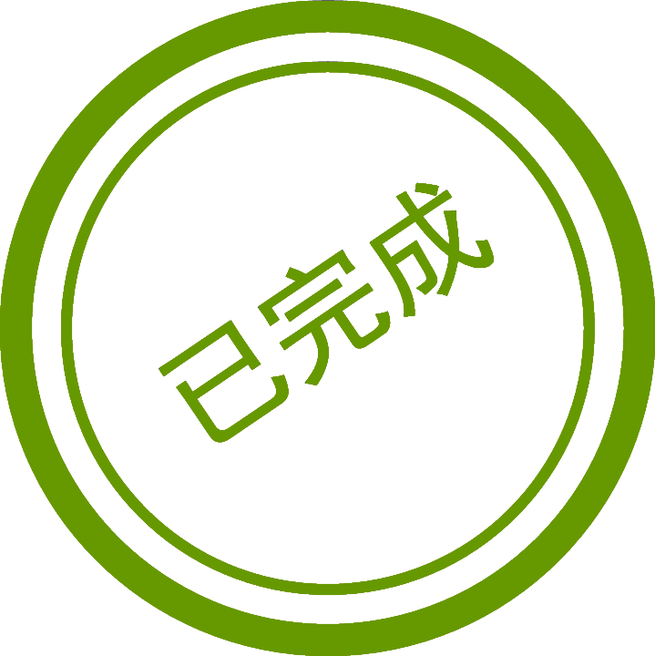

加载中...

SFC跳站信息
返回
制令单号：
SN 编码：
当前站点：
跳至站点：
跳站原因：
审核人：
审核时间：
跳站修改
审核确认
SFC跳站信息修改
制令单号
SN编码
当前站点
选择当前站点
装配
高温
终检
安规
包装
OQC
跳至站点
选择跳至站点
高温
终检
安规
包装
OQC
跳站原因
待生产部经理审核
待工程部和质控部会签确认
工程部会签确认信息
会签确认描述：
审核人：
审核时间：
审核确认
质量控制部会签确认信息
会签确认描述：
审核人：
审核时间：
审核确认
待工程部会签确认
待质量控制部会签确认
待工程部经理审核
待质量控制部经理审核
工程部会签确认
质量控制部会签确认